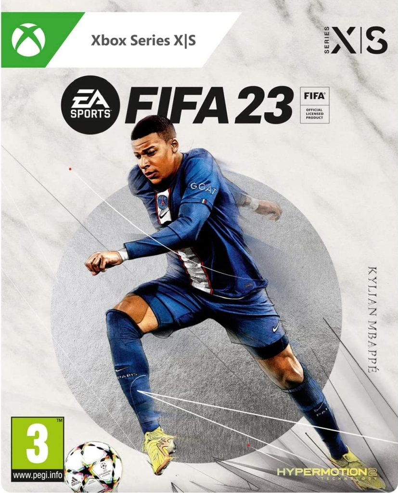
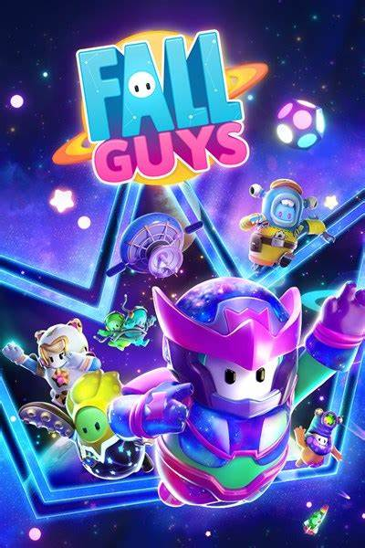
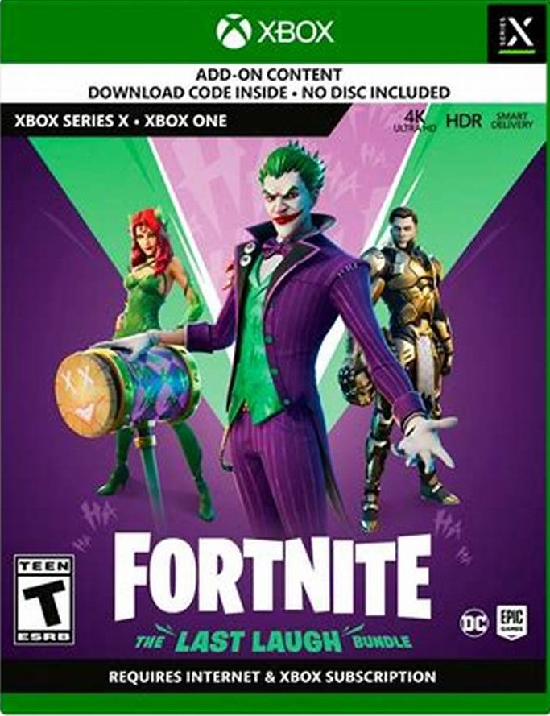
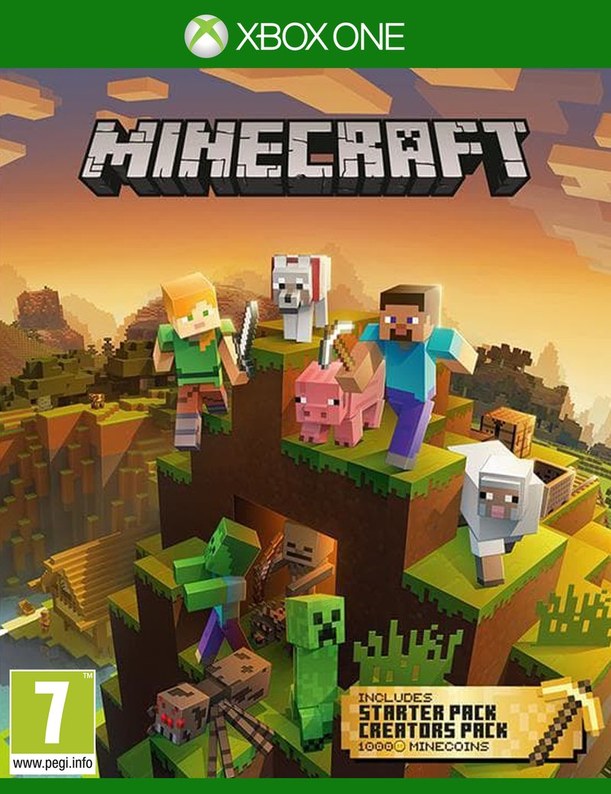

| Fifa. | Fall Guys. | Fortnite. | Minecraft. |
|---|---|---|---|
|
Con EA SPORTS FIFA 23 para Xbox Series X|S, vivirás aún más toda la emoción y el realismo del Juego de Todos en las canchas gracias a los avances de la tecnología HyperMotion2, que está potenciada con el doble de capturas de movimientos en el mundo real para crear animaciones de futbol mucho más realistas que antes en cada partido. |
Las consolas de Microsoft ofrecen unas cotas de calidad gráfica similares a las de Sony. Si miramos a la más potente, Xbox Series X, está un punto por encima de la Playstation 5; sin embargo este juego no requiere unos gráficos muy desafiantes. |
Las consolas de Microsoft ofrecen unas cotas de calidad gráfica similares a las de Sony. Si miramos a la más potente, Xbox Series X, está un punto por encima de la Playstation 5; mientras que si miramos a Xbox Series S nos encontramos con un precio muy competitivo (aunque con menores prestaciones). |
El rendimiento técnico sí ha cumplido las promesas: los gráficos se mueven con bastante solidez en 1080p y 60 frames por segundo y, además, el mundo que generemos puede ser hasta 36 veces más grandes que en la entrega previa. Además, la distancia de dibujado (es decir, desde qué distancia "brotan" los objetos) también se ha mejorado. Por supuesto, no es tan redondo como la versión PC ni en su interfaz (el contro, con ratón es más cómodo) ni por su versatilidad (hay un mundo de mods por descubrir en ordenadores), pero es una conversión muy acertada. |
|  |  |  |  |